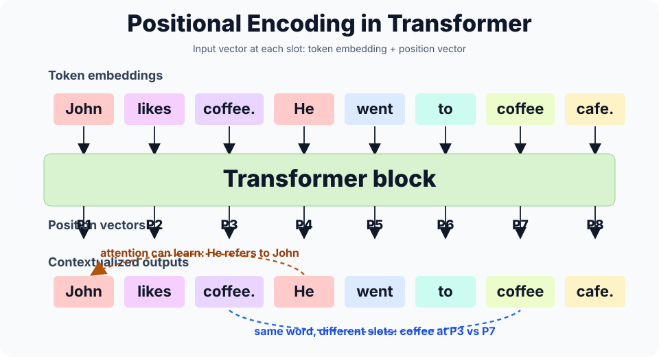

🔮 Positional Encoding位置编码
1. Concept Understanding
Positional encoding injects sequence order into a Transformer. Self-attention by itself sees a set of token vectors, so the model needs extra information telling it which token came first, second, third, and so on.
Formally, plain self-attention is permutation equivariant: if you permute the input token vectors, the outputs permute in the same way. That is useful symmetry for sets, but a sentence needs word order.
Lecture 16 introduces positional information as the missing ingredient that lets self-attention handle word order instead of treating tokens as an unordered set. The fix is to add a position vector $r_n$ to each token embedding $x_n$ before the first Transformer block, so each layer receives both token identity and location.
2. Plain-English Explanation
Think of token embeddings as words written on identical sticky notes. Without position, shuffling the notes can look too similar to the model. Positional encoding writes a small coordinate mark on every sticky note: "this is position 0", "this is position 1", and so on.
That matters because word order changes meaning: "good, not bad" and "bad, not good" contain nearly the same words, but the order flips the message.
Sinusoidal positional encoding uses waves of different frequencies. Low-frequency waves change slowly and help with broad location; high-frequency waves change quickly and help distinguish nearby positions.

Reference used for the visual idea: GeeksforGeeks, Positional Encoding in Transformers.
How to read the diagram. The colored word boxes are token embeddings. The labels $P1,\ldots,P8$ are position vectors. The Transformer input at slot $n$ is the word's vector plus that slot's position vector, so "coffee" at $P3$ and "coffee" at $P7$ are no longer identical inputs.
Important caveat. Positional encoding supplies order; it does not automatically know that "He" refers to "John." Attention can learn that relation after the tokens carry both content and location.
3. Core Intuition
The sine/cosine design is useful because shifting position by $k$ becomes a rotation in each 2-D frequency pair. That means the model can learn relative distance patterns like "look two tokens back" using linear operations on the positional features.
This is the key bridge to HW4 §2.1: $PE(pos+k)$ can be written as a linear function of $PE(pos)$, and the dot product between two positional encodings depends only on their distance $k$.
Because sine and cosine values stay in $[-1,1]$, the positional signal is bounded. In high dimensions, token embeddings and position vectors can be nearly orthogonal, so adding them can still preserve both "what token is this?" and "where is it?" information for later layers.
4. Key Equations
Add position to token embeddings
What it does. The Transformer usually adds position and token vectors coordinate by coordinate rather than concatenating them. Both live in the same $d_{\text{model}}$-dimensional space.
Sinusoidal positional encoding
What it does. Each position gets a vector whose even coordinates are sine waves and whose odd coordinates are cosine waves. Different coordinate pairs use different frequencies, so the vector carries both coarse and fine position information and acts like a distinguishable fingerprint over the intended sequence range. This fixed sinusoidal scheme has zero learnable parameters.
Shift by $k$
What it does. Moving from $pos$ to $pos+k$ rotates each 2-D sine/cosine pair by an angle determined by $k\omega_i$. The coefficients depend on the offset $k$, not on the absolute position.
Relative-position dot product
What it does. The similarity between two positional encodings depends only on their distance $pos_2-pos_1$, not their absolute locations.
Learned positional embeddings
What it does. Learned position embeddings give each position its own parameter vector, as in many BERT- or ViT-style models.
5. Worked Examples
HW4 §2.1.1: write the formula
Source: HW4 §2.1, paraphrased.
For every frequency index $i$, put sine in the even coordinate and cosine in the odd coordinate. The denominator $10000^{2i/d_{\text{model}}}$ sets the wavelength.
Quick hand calculation: $pos=1$, $d_{\text{model}}=2$
There is only one frequency pair, $i=0$, so $\omega_0=10000^0=1$. The encoding is $PE(1)=(\sin 1,\cos 1)\approx(0.8415,0.5403)$.
HW4 §2.1.2: prove the linear shift property
Use the angle-addition identities:
The coefficients depend on $k$ and $\omega$, not on $pos$, so the shift is linear in the two coordinates of $PE(pos)$.
HW4 §2.1.3: dot product depends only on distance
For one frequency pair, $\sin a\sin b+\cos a\cos b=\cos(b-a)$. Summing over frequencies gives a function of $pos_2-pos_1$ only.
6. Problem-Solving Tips
- Define $\omega_i$ first. It makes every derivation shorter.
- Group coordinates in pairs: $(2i,2i+1)$ is one sine/cosine pair.
- Use angle-addition identities, not induction, for $PE(pos+k)$.
- For dot products, pair sine with sine and cosine with cosine at the same frequency.
- For architecture questions, say PE is added to input embeddings before the first self-attention layer.
- For learned-vs-sinusoidal questions, compare parameters and length extrapolation.
7. Common Mistakes
- Swapping the sine and cosine coordinates. The exam usually follows the Transformer paper convention: even is sine, odd is cosine.
- Writing the shift coefficients as functions of $pos$. They should depend on $k$ and frequency only.
- Claiming self-attention naturally knows order. It does not without positional information.
- Forgetting that the dot-product proof sums over every frequency pair.
- Thinking learned positional embeddings automatically extrapolate to unseen sequence lengths. They are learned only for configured positions unless extended or adapted.
- Forgetting that sinusoidal PE is fixed and has no learnable parameters.
8. Exam Focus
- Memorize the two PE equations.
- Know the input step $u_n=x_n+r_n$.
- Be able to show $PE(pos+k)$ is a 2-D rotation applied to $PE(pos)$ for each frequency.
- Be able to prove $PE(pos_1)^\top PE(pos_2)$ depends only on relative offset.
- Explain in one sentence why Transformers need positional encoding.
- Contrast fixed sinusoidal PE with learned positional embeddings.
9. Quick Checklist
- Self-attention is order-blind without PE.
- Even coordinate: sine. Odd coordinate: cosine.
- $\omega_i=10000^{-2i/d_{\text{model}}}$.
- Shift by $k$ equals a rotation depending on $k$.
- Dot product depends on relative distance, not absolute position.
- Sinusoidal PE is fixed, bounded, and parameter-free.
- Learned PE is flexible but tied to trained positions.
1. 概念理解 / Concept Understanding
Positional encoding 的作用是把序列顺序注入 Transformer。Self-attention 本身更像在看一堆 token 向量，如果不额外告诉它位置，它很难区分“谁在前，谁在后”。
更正式地说，plain self-attention 是 permutation equivariant：如果把输入 token vectors 打乱，输出也会按同样方式被打乱。这个性质适合 set，但句子必须知道 word order。
Lecture 16 里，positional information 是 self-attention 能处理词序的关键：不加位置，模型更像在处理 unordered set。实际做法是在第一个 Transformer block 之前，把 position vector $r_n$ 加到 token embedding $x_n$ 上，让每个输入向量同时带有 token identity 和 location。
2. 大白话理解 / Plain-English Explanation
可以把 token embedding 想成写着单词的便利贴。如果不标位置，把便利贴打乱以后，模型看到的东西可能差不多。Positional encoding 就是在每张便利贴上写一个小坐标：“我是第 0 个”“我是第 1 个”。
这很关键，因为 word order 会改变意思：比如 “good, not bad” 和 “bad, not good” 单词几乎一样，但顺序一换，语义就反过来了。
sin/cos 版本用了很多不同频率的波。低频变化慢，帮助模型知道大概位置；高频变化快，帮助区分相邻位置。
视觉参考：GeeksforGeeks, Positional Encoding in Transformers。
怎么看这张图？ 彩色单词框是 token embeddings；$P1,\ldots,P8$ 是 position vectors。第 $n$ 个位置真正送进 Transformer 的不是单独的 word vector，而是 word vector + position vector，所以 $P3$ 的 "coffee" 和 $P7$ 的 "coffee" 会变成不同输入。
注意边界。 Positional encoding 只提供 order / location，不会自动知道 "He" 指代 "John"。它给 attention 提供位置线索，后续 attention 才能结合内容学出这种 long-range relation。
3. 核心直觉 / Core Intuition
sin/cos 好用，是因为位置平移 $k$ 后，每一对二维坐标只是在做一个 rotation。也就是说，模型可以用线性操作学到“往前看两个 token”这种相对位置规律。
这正是 HW4 §2.1 的核心：$PE(pos+k)$ 是 $PE(pos)$ 的线性函数；两个 positional encoding 的 dot product 只和距离 $k$ 有关。
因为 sine / cosine 的值都在 $[-1,1]$，positional signal 是 bounded 的。在高维空间里，token embedding 和 position vector 往往可以近似 orthogonal，所以即使两者相加，后续层仍然能分开处理“是什么 token”和“在什么位置”。
4. 核心公式 / Key Equations
把 position 加到 token embedding
这个公式在做什么？ 这里通常不是把 token 和 position 拼接起来，而是逐坐标相加。两者都在同一个 $d_{\text{model}}$ 维空间里。
Sinusoidal positional encoding
这个公式在做什么？ 每个位置会得到一个向量：偶数维是 sine wave，奇数维是 cosine wave。不同维度用不同频率，所以既能表示粗略位置，也能区分相邻位置，在常用序列长度范围内像一个可区分的 fingerprint。这个 fixed sinusoidal scheme 没有 learnable parameters。
平移 $k$
这个公式在做什么？ 从 $pos$ 平移到 $pos+k$，每一对 sine/cosine 坐标就是做了一次 rotation。系数只依赖 offset $k$ 和 frequency $\omega_i$，不依赖绝对位置 $pos$。
只依赖相对距离的 dot product
这个公式在做什么？ 两个位置编码的相似度只看距离 $pos_2-pos_1$，不看它们具体出现在句子第几个位置。
Learned positional embeddings
这个公式在做什么？ Learned positional embedding 会给每个位置单独学一个参数向量，BERT / ViT 这类模型里很常见。
5. 例题讲解 / Worked Examples
HW4 §2.1.1：写公式
出处：HW4 §2.1，题意转述。
每个 frequency index $i$ 对应两个维度：偶数维放 sine，奇数维放 cosine。分母 $10000^{2i/d_{\text{model}}}$ 控制 wavelength。
快速手算：$pos=1$, $d_{\text{model}}=2$
这时只有一个 frequency pair，$i=0$，所以 $\omega_0=10000^0=1$。位置编码就是 $PE(1)=(\sin 1,\cos 1)\approx(0.8415,0.5403)$。
HW4 §2.1.2：证明平移是线性变换
直接用三角和角公式：
系数只依赖 $k$ 和 $\omega$，不依赖 $pos$，所以 $PE(pos+k)$ 是 $PE(pos)$ 的线性函数。
HW4 §2.1.3：dot product 只看距离
对每个频率，$\sin a\sin b+\cos a\cos b=\cos(b-a)$。把所有频率加起来，就只剩 $pos_2-pos_1$。
6. 解题技巧 / Problem-Solving Tips
- 先定义 $\omega_i$，公式会短很多。
- 把 $(2i,2i+1)$ 当成一组 sine/cosine 坐标。
- 证明 $PE(pos+k)$ 时用三角和角公式，不要绕远。
- 做 dot product 时，同一频率的 sine 和 cosine 配对看。
- 架构题里记住：PE 加在 input embeddings 上，位置在 first self-attention layer 之前。
- 比较 learned vs sinusoidal 时，抓住 parameters 和 length extrapolation。
7. 常见错误 / Common Mistakes
- 把 sine / cosine 的维度写反。Transformer paper 习惯是 even sine, odd cosine。
- 把平移系数写成 $pos$ 的函数。正确系数只依赖 $k$ 和 frequency。
- 以为 self-attention 天然知道顺序。没有 positional information 时它不知道。
- dot product 证明时忘了对所有 frequency pair 求和。
- 以为 learned positional embeddings 会自动泛化到没见过的 sequence length；通常它只覆盖训练时配置的位置。
- 忘记 sinusoidal PE 是 fixed function，没有 learnable parameters。
8. 考试重点 / Exam Focus
- 会默写两条 PE 公式。
- 知道 input step 是 $u_n=x_n+r_n$。
- 会证明每个 frequency pair 下，$PE(pos+k)$ 是对 $PE(pos)$ 的 rotation。
- 会证明 $PE(pos_1)^\top PE(pos_2)$ 只依赖 relative offset。
- 能用一句话解释 Transformer 为什么需要 positional encoding。
- 能比较 fixed sinusoidal PE 和 learned positional embeddings。
9. 速记清单 / Quick Checklist
- Self-attention 不加 PE 就基本不懂顺序。
- 偶数维 sine，奇数维 cosine。
- $\omega_i=10000^{-2i/d_{\text{model}}}$。
- 平移 $k$ = 旋转，旋转角和 $k$ 有关。
- dot product 只依赖相对距离。
- Sinusoidal PE 是 fixed、bounded、parameter-free。
- Learned PE 更灵活，但绑定训练时的位置范围。